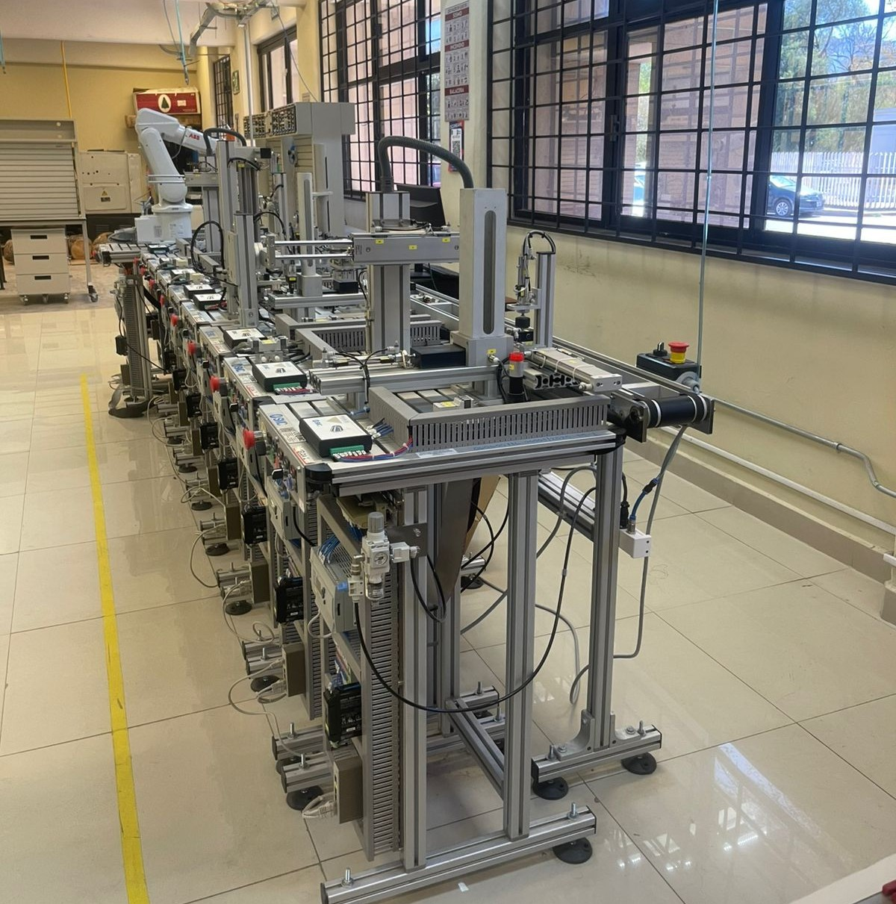
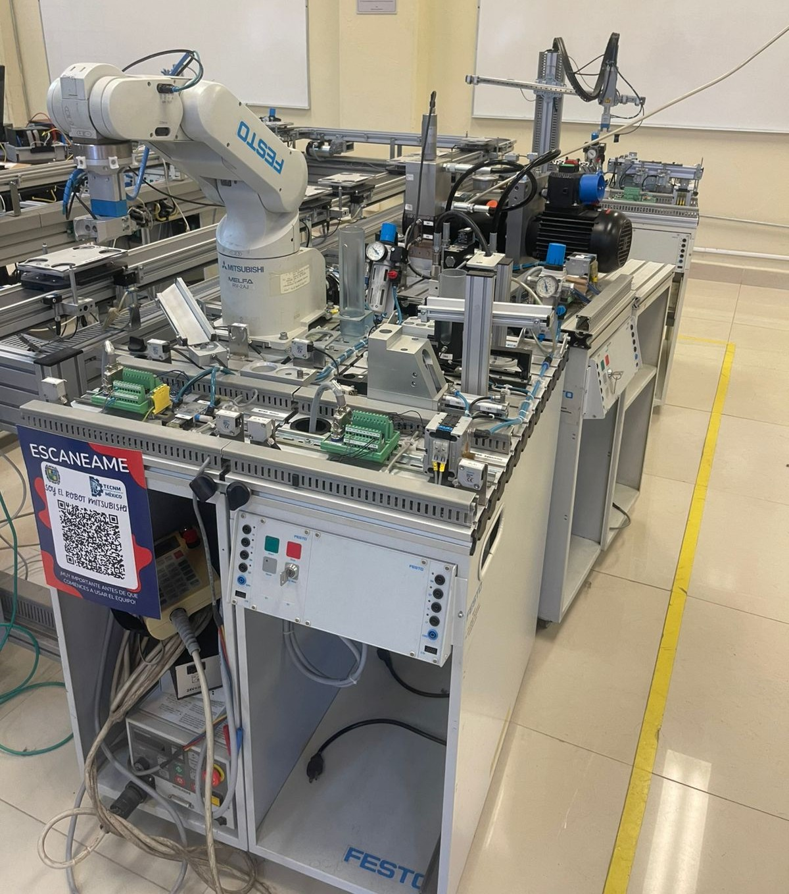
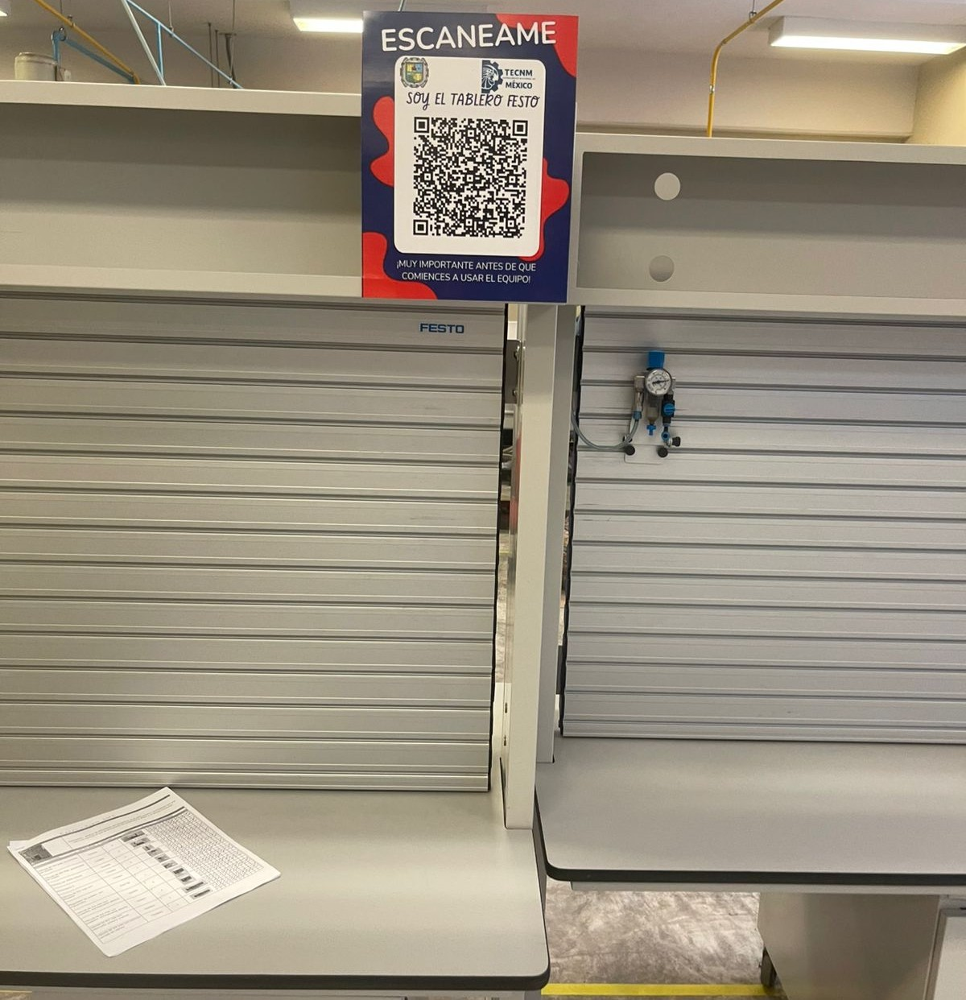

1. Identidad, Historia y Ubicación
Nombre oficial:Laboratorio de Mecatrónica
Carreras:Dirigido principalmente a estudiantes de ingeniería mecatrónica.
Semestres:Prácticas activas a partir del 4to semestre de la carrera.
Capacidad máxima:Aproximadamente 30 personas por sesión.
Año de fundación:Año 2010
Propósito fundacional:Crear un espacio para que los alumnos trasladen los conceptos teóricos a la experimentación práctica.
Ubicación:Campus Boillot.

2. Filosofía y Organización
Misión:Preparar integralmente a los estudiantes para el sector industrial, exponiéndolos a situaciones reales y actuales.
Visión:Ser un espacio de aprendizaje integral que convierta ideas estudiantiles en soluciones reales para la sociedad.
Valores:Respeto mutuo entre docentes y alumnos, convivencia armónica y responsabilidad profesional.
Jefe de departamento:Dr. Felipe Alberto Machorro Fernandez
Encargado directo del laboratorio:En la mañana: Ing. Sergio Enrique Cedillo Rodriguez
En la tarde: Ing. Ana Karen Melendez Olivares
3. Prácticas y Materias
Materias participantes:Manufactura Avanzada, PLC, Automatización, Circuitos hidráulicos/neumáticos y Tópicos de automatización.
Proyectos finales:Desarrollo de programas especializados en CNC.
Interdisciplinariedad:Colaboración frecuente con las carreras de Gestión y Materiales.
Tipo de prácticas:Operación manual (torno/fresadora) y automatización orientada a procesos CNC.
¿Son obligatorias?:Sí, son un requisito fundamental al cursar las materias de aplicación práctica.
Maquinaria del Laboratorio



4. Equipo, Software y Reglamento
Equipos principales:Celdas, CNC, Fresadora, Torno, Brazo automatizado, tableros de hidráulica y neumática.
Software especializado:SolidWorks, AutoCAD.
Mantenimiento:Preventivo diario; chequeo técnico constante para garantizar la funcionalidad del equipo.
Normas clave:Prohibido introducir alimentos/bebidas. Ingreso exclusivo con asesoría de un catedrático. Mantener limpieza rigurosa del área.
Prohibiciones:Correr, gritar o ingresar con ropa holgada que comprometa la seguridad.
Equipo personal:Uso obligatorio de lentes de seguridad, bata y zapato cerrado.
5. Horarios, Eventos y Contacto
Horario oficial:Lunes a viernes de 7:00 am a 10:00 pm.
Fines de semana:Disponibles bajo autorización del jefe de departamento.
Reservación:Gestión semanal cada viernes, los docentes se dirigen con el encargado para cualquier petición.
Correo:Dr. Felipe Machorro: felipe.mf@saltillo.tecnm.mx
Ing. Enrique Cedillo: sergio.cr@saltillo.tecnm.mx
Ing. Ana Karen ana.mo@saltillo.tecnm.mx
Eventos:Recorridos guiados para padres y estudiantes visitantes.
Redes sociales:Visita la página oficial (CEIMT)